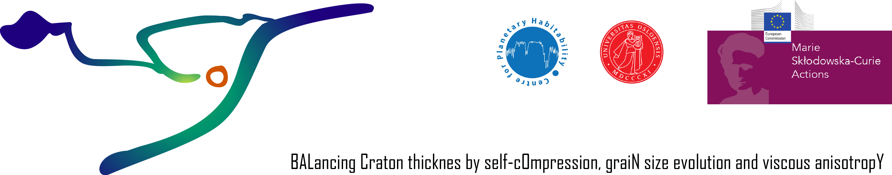
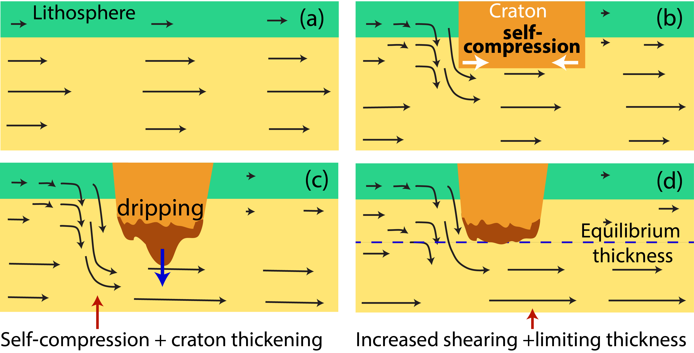

BALCONY:
A Maria Skłodowska-Curie Action project funded the European Union

Background
Cratons, the oldest (>3 Ga) and most stable parts of the Earth's lithosphere, preserve early Earth geological records crucial for understanding the habitability and evolution of life, the great oxygenation event, and the formation of ore minerals that are the building blocks of modern civilization. The long-term survival of cratons on a tectonically active planet like Earth has been attributed to their greater thickness and viscosity, which resist convective shearing from mantle flow beneath them. These same properties may also redirect mantle flow (typically downward) around the craton, creating a self-compressive environment.Hypothesis

Our hypothesis proposes that self-compression can increase craton thickness over time (Fig. 1 b). However, this increasing thickness leads to anisotropic viscosity at the base of cratons, potentially triggering the formation of drips that remove excess thickness (Fig. 1 c). Continuous shearing at the base can reduce grain size, lowering viscosity and further enhancing shearing, which helps balance craton thickness (Fig 1 d).
Aim
In this project, BALCONY, we aim to develop global numerical models to investigate the physical mechanisms that maintain the thickness of cratonic roots over time through continuous disruption and self-healing.Objective
- Examine the role of self-compression in craton thickening.
- Investigate the development of viscous anisotropy and grain size reduction at the base of cratons and their effects on craton thickness.
- Understand the mechanisms that have balanced craton thickness (self-compression, gravitational thickening, and viscous anisotropy) for billions of years and their geological implications.